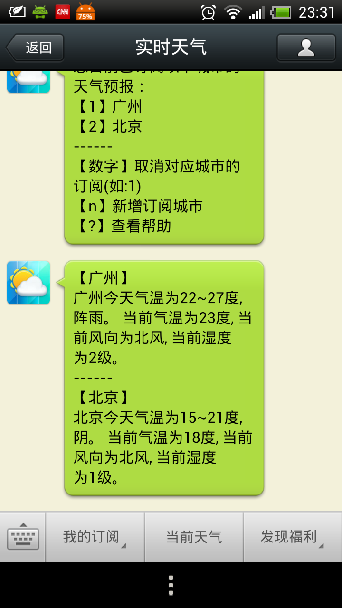
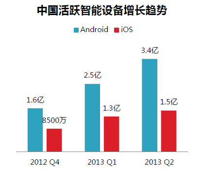

在移动互联网这个追求小而美的世界，数鹏通（LinkCM）是一家提供高品质移动应用解决方案提供商，专注于移动互联网领域的发展和创新。我们不仅有着深厚的技术积累和专业的研发流程，更重要的是我们每个项目都有一个专业的服务团队全程负责产品的策划到研发，我们始终坚持为产品打造最好的用户体验以及最佳的设计品质。
我们认为，未来十年，移动互联网时代用户数的迅猛增长，已是必然趋势。用户数的急速增长，意味着巨大的机会，同时也意味着巨大的挑战，终端的小型化、多样化，接入方式的多样化都意味着我们处在全新的互联网生态环境中。
基于公司深厚的移动行业背景和专业成熟的团队，公司在新兴的移动互联网（Mobile Internet）领域有着独特的行业领先优势。区别与传统互联网产业，公司在移动互联网领域重点布局于社交媒体应用和移动互联网应用（Andriod/IOS）这两个战略方向。
1、社交媒体开发平台 Social Media Development Platform
近年来，社交媒体在互联网的沃土上蓬勃发展，爆发出令人眩目的能量。其传播的信息已成为人们浏览互联网的重要内容。
数鹏通（LinkCM）建立了强大的社交媒体开发和发布平台，集成了新浪微博，腾讯微博，微信公众服务号，微信公众订阅号，邮件，互联网传真，门户，博客等各种移动互联网媒体发布渠道；真正意义上做到一次发布、全渠道实时同步。
社交媒体开发平台旨在构建以企业提供信息资源的基础上，用户高效迅捷地互联，交换传播信息，展现个性。以目前正式运营的微信公众服务号“实时天气”为例，该微信公众服务号实现了依据权威有效的天气信息源，以发布天气信息为载体，通过微信公众帐号实现了用户自服务的CRM管理，为用户提供高效互动，个性化的服务。
|  |
2、移动应用开发平台 Andriod/IOS Development Platform
碎片化和快速迭代成为了移动互联网趋势在中国市场2013年的年度关键词。从友盟的分析报告中，我们可以看到，2013年第二季度，中国活跃智能设备已经超过5亿。其中，有3.4亿的活跃Android设备、1.5亿活跃的iOS设备。半年间中国的活跃设备数量翻了一番。中低端Android设备市场大幅增长，为国产品牌占领市场创造了条件。联想取代HTC成为中国Android设备品牌第二名，小米跻身前五，步步高进入前十。 中国90%的活跃Android设备年龄在14个月以下，比国际水平更新换代更快。
|  |
数鹏通（LinkCM）在Andriod和IOS移动应用开发平台上有着深厚的积累，我们已为全国多家知名企业提供了相应的技术解决方案，并树立了良好的口碑，积累了丰富的经验和成功案例，我们的专业研发流程以及良好的售后服务质量亦赢得客户的广泛认可，持续助力企业实现卓越的业务成果。
在Andriod移动应用开发领域，由于Andriod版本众多、终端繁杂，我们在如何快速的适配方面积累了丰富的经验。在IOS移动应用开发领域，我们的专业团队在与不同客户进行合作的过程中，除了对iPhone/iPad软件以及顶尖iPhone/iPad应用程序开发至关重要的基础架构的使用外，我们在Cocoa Touch，以及苹果最新的Sprite Kit框架编程方面已积累了大量的技术与经验，我们拥有了成熟且强大的移动应用APP开发框架，保证了产品迭代的速度以及质量。